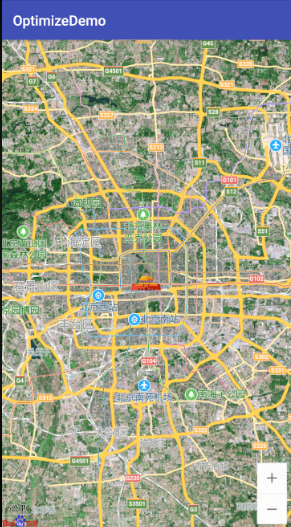
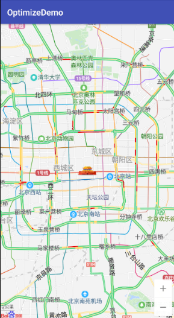
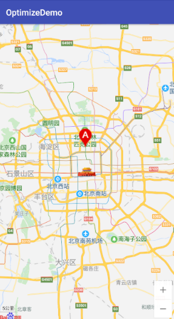
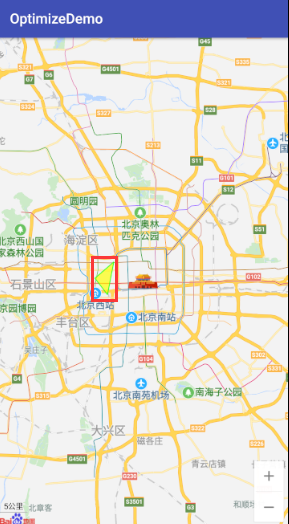
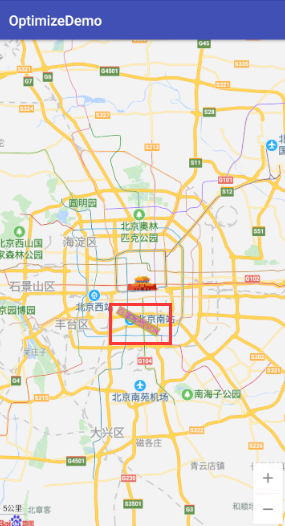
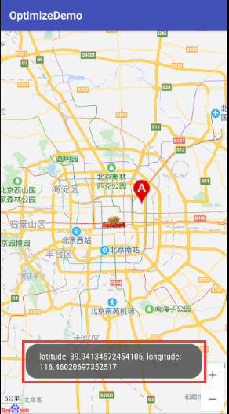
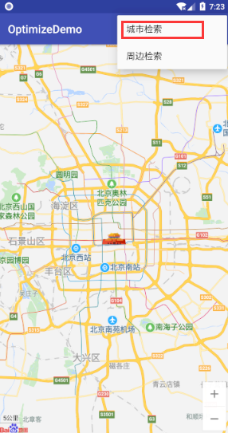
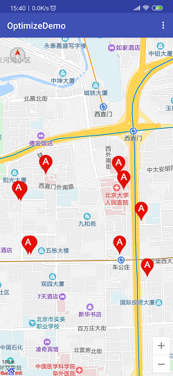
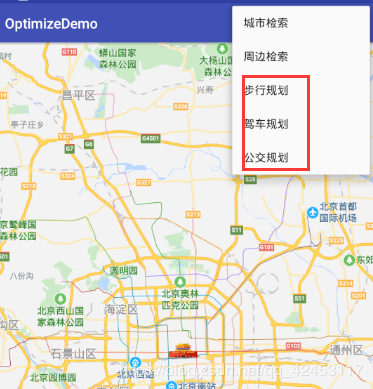
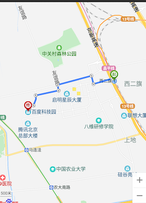

目录
@
之前自己在做一个小项目时涉及到了百度地图的一些内容，当时因为对百度地图的开发流程不是很了解，于是就查阅了一下官方文档，然后阅读别人的博客来学习，但是发现这里面并没有我想要的东西，官方文档也说得不太详细，模棱两可。所以后面自己摸索了一下，也将自己的学习所得分享出来。
那么直接进入正题吧，关于百度地图SDK的集成这里不做讲解，我们首先介绍一下关于地图的图层。
首先，我们要明白，地图是由若干个图层组成的，地图可以包含一个或多个图层。
每个图层在每个级别都是由若干张图块组成的，它们覆盖了地球的整个表面。
例如您所看到包括街道、兴趣点、学校、公园等内容的地图展现就是一个图层，另外交通流量的展现也是通过图层来实现的。
那么百度地图就为我们提供了一系列的图层：
首先你得在布局中添加MapView控件，后面的所有操作都基于该控件。
<com.baidu.mapapi.map.MapView
android:id="@+id/mapView"
android:layout_width="match_parent"
android:layout_height="match_parent" />//获得地图控制器
baiduMap = mapView.getMap();
baiduMap.setMapType(BaiduMap.MAP_TYPE_SATELLITE);//卫星图层通过getMap()方法获得地图控制器，你就可以设置图层类型了，比如卫星图层，设置完后运行看效果：

或者是交通图层：
//获得地图控制器
baiduMap = mapView.getMap();
baiduMap.setTrafficEnabled(true);//交通图层运行看效果：

相关的图层还有很多，不重复介绍了，设置方法和上面一样。
地图覆盖物就是点标记，点标记是用来标示某个位置点信息的一种地图要素，分别包括：
地图上最常见的就是点标记Marker，那么如何实现在地图上的点标记呢?
//获得地图控制器
baiduMap = mapView.getMap();
LatLng point = new LatLng(39.963175, 116.400244);
BitmapDescriptor mit = BitmapDescriptorFactory.fromResource(R.drawable.icon_marka);
OverlayOptions options = new MarkerOptions().position(point).icon(mit);
baiduMap.addOverlay(options);首先还是获取地图控制器，然后创建一个LatLng对象用于指定点标记的位置，参数是经纬度，接着通过BitmapDescriptorFactory工厂生成一个BitmapDescriptor ，这是一个点标记的图标，就是一张图片，再创建MarkerOptions对象将位置和图标传入，最后将options 加到地图中。运行看效果：

这就是一个Marker标记。
除了Marker标记，还有多边形标记：
LatLng pt1 = new LatLng(39.93923, 116.357428);
LatLng pt2 = new LatLng(39.91923, 116.327428);
LatLng pt3 = new LatLng(39.89923, 116.347428);
List<LatLng> pts = new ArrayList<>();
pts.add(pt1);
pts.add(pt2);
pts.add(pt3);
OverlayOptions polygonOption = new PolygonOptions().points(pts).stroke(new Stroke(3, 0xAA00FF00)).fillColor(0xAAFFFF00);
baiduMap.addOverlay(polygonOption);实现原理是类似的，这里定义了三个坐标点，它围成的图形就是一个三角形，如果想做四边形，就需要定义四个位置点。运行看效果：

最后介绍一下文本标记的用法：
LatLng llText = new LatLng(39.86923, 116.397428);
OverlayOptions textOption = new TextOptions()
.bgColor(0xAAFFFF00)
.fontSize(40)
.fontColor(0xFFFF00FF)
.text("百度地图SDK")
.rotate(-30)
.position(llText);
baiduMap.addOverlay(textOption);也相当简单，无非就是一些属性的设置，那直接运行看效果了：

其它的一些标记用法相同，不做过多介绍。
那么这里介绍一下地图事件，用过百度地图的同学都知道，地图肯定是可以点击的，而且你点在哪个位置，相应的位置就会出现点标记，那么这个功能是如何实现的呢？其实很简单，借助地图事件即可完成，我们一起来实现一下：
baiduMap.setOnMapClickListener(new BaiduMap.OnMapClickListener() {
@Override
public void onMapClick(LatLng latLng) {
BitmapDescriptor descriptor = BitmapDescriptorFactory.fromResource(R.drawable.icon_marka);
OverlayOptions options = new MarkerOptions().position(latLng).icon(descriptor);
baiduMap.addOverlay(options);
}
@Override
public boolean onMapPoiClick(MapPoi mapPoi) {
return false;
}
});调用setOnMapClickListener()方法注册监听，在监听方法中，创建一个Marker标记并添加到地图上，这个时候，只要点击地图上的任意位置，它就会触发点击事件，并在该位置绘制Marker标记。
那么还有一个就是Marker标记的点击事件，通过点击Marker标记可以获取该位置的一些信息：
baiduMap.setOnMarkerClickListener(new BaiduMap.OnMarkerClickListener() {
@Override
public boolean onMarkerClick(Marker marker) {
Toast.makeText(getApplicationContext(), marker.getPosition().toString(), Toast.LENGTH_LONG).show();
return false;
}
});这里我们输出了一下Maker标记位置的经纬度，现在运行看效果：

POI是“Point of Interest”的缩写，中文可以翻译为“兴趣点”。在地理信息系统中，一个POI可以是一栋房子、一个商铺、一个邮筒、一个公交站等。那么我们可以通过POI检索来查询地图上的一些兴趣点信息并反馈给用户。
那么在这里我介绍两个检索，城市检索和周边检索，其它检索功能类似。
首先实现一个菜单，菜单栏中有城市检索和周边检索两个选项，代码比较简单，就不贴出来了，我们的重点是检索。
PoiSearch mPoiSearch = PoiSearch.newInstance();
mPoiSearch.setOnGetPoiSearchResultListener(new OnGetPoiSearchResultListener() {
@Override
public void onGetPoiResult(PoiResult poiResult) {
List<PoiInfo> allPoi = poiResult.getAllPoi();
for (PoiInfo poiInfo : allPoi) {
Log.d("MainActivityClass", poiInfo.name.toString());
}
}
@Override
public void onGetPoiDetailResult(PoiDetailResult poiDetailResult) {
}
@Override
public void onGetPoiDetailResult(PoiDetailSearchResult poiDetailSearchResult) {
}
@Override
public void onGetPoiIndoorResult(PoiIndoorResult poiIndoorResult) {
}
});首先要创建PoiSearch 实例用于检索，然后注册监听，当发起检索并返回数据时就会调用onGetPoiResult()方法，该方法返回一个PoiResult 对象，该对象调用getAllPoi()方法即可得到检索成功的全部信息，这里我们输出一下检索对象中的名字。
注册了监听事件后，我们就要实现检索：
@Override
public boolean onOptionsItemSelected(MenuItem item) {
switch (item.getItemId()) {
case R.id.city_search:
mPoiSearch.searchInCity(new PoiCitySearchOption()
.city("北京") //城市名
.keyword("餐厅") //检索关键字
.pageNum(1) //结果页
.pageCapacity(10)); //结果数
break;
}
return true;
}还是通过PoiSearch对象调用searchInCity方法来实现城市检索，现在运行看效果：

日志信息如下：
08-01 15:32:05.882 25962-25962/com.itcast.optimizedemo D/MainActivityClass: 利群烤鸭店(前门店)
08-01 15:32:05.882 25962-25962/com.itcast.optimizedemo D/MainActivityClass: 金鼎轩(团结湖店)
08-01 15:32:05.882 25962-25962/com.itcast.optimizedemo D/MainActivityClass: 金鼎轩(方庄店)
08-01 15:32:05.882 25962-25962/com.itcast.optimizedemo D/MainActivityClass: 眉州东坡酒楼(国奥村店)
08-01 15:32:05.883 25962-25962/com.itcast.optimizedemo D/MainActivityClass: 便宜坊(鲜鱼口店)
08-01 15:32:05.883 25962-25962/com.itcast.optimizedemo D/MainActivityClass: 眉州东坡酒楼(亚运村店)
08-01 15:32:05.883 25962-25962/com.itcast.optimizedemo D/MainActivityClass: 海底捞火锅(红庙店)
08-01 15:32:05.883 25962-25962/com.itcast.optimizedemo D/MainActivityClass: 铃木食堂(杨梅竹店)
08-01 15:32:05.883 25962-25962/com.itcast.optimizedemo D/MainActivityClass: 玫瑰花园(远大路店)
08-01 15:32:05.883 25962-25962/com.itcast.optimizedemo D/MainActivityClass: 海底捞火锅(西直门店)成功获取到餐厅信息。
接下来尝试一下周边检索：
@Override
public boolean onOptionsItemSelected(MenuItem item) {
switch (item.getItemId()) {
case R.id.city_search:
LatLng pt = new LatLng(39.93923, 116.357428);
mPoiSearch.searchNearby(new PoiNearbySearchOption()
.radius(10000) //检索半径
.pageCapacity(10) //结果数
.pageNum(1) //结果页
.location(pt) //检索点
.keyword("ATM")); //检索关键字
break;
}
return true;
}监听代码不用修改，周边检索只需用searchNearby()方法即可，运行之后，日志信息如下：
08-01 15:36:01.921 27315-27315/com.itcast.optimizedemo D/MainActivityClass: 兴业银行24小时自助银行(北京月坛支行)
08-01 15:36:01.921 27315-27315/com.itcast.optimizedemo D/MainActivityClass: 北京银行24小时自助银行(车公庄大街社区支行)
08-01 15:36:01.921 27315-27315/com.itcast.optimizedemo D/MainActivityClass: 平安银行(北京官园自助银行)
08-01 15:36:01.921 27315-27315/com.itcast.optimizedemo D/MainActivityClass: 浦发银行24小时自助银行
08-01 15:36:01.921 27315-27315/com.itcast.optimizedemo D/MainActivityClass: 中国邮政储蓄银行24小时自助银行服务
08-01 15:36:01.921 27315-27315/com.itcast.optimizedemo D/MainActivityClass: 中国邮政储蓄银行24小时自助银行(新华里支行)
08-01 15:36:01.921 27315-27315/com.itcast.optimizedemo D/MainActivityClass: 招商银行ATM(人民医院西直门ATM)
08-01 15:36:01.921 27315-27315/com.itcast.optimizedemo D/MainActivityClass: 北京银行ATM
08-01 15:36:01.921 27315-27315/com.itcast.optimizedemo D/MainActivityClass: 中国工商银行ATM(北京大学人民医院科研教学楼东南)
08-01 15:36:01.921 27315-27315/com.itcast.optimizedemo D/MainActivityClass: 远通维景国际大酒店-自动取款机成功获取到取款机信息。
那么通过POI检索和Marker标记，我们可以进一步地设计我们的应用，例如在搜索ATM机之后将地图上的ATM位置进行标记以提醒用户。那我们来实现一下该功能：
BitmapDescriptor descriptor = BitmapDescriptorFactory.fromResource(R.drawable.icon_marka);
OverlayOptions options = new MarkerOptions().position(poiInfo.location).icon(descriptor);
baiduMap.addOverlay(options);代码其实非常简单，其它地方的代码都不用修改，只需要在监听检索的监听方法中添加上面的代码，检索对象里包含很多信息，包括位置，那么我们就可以通过位置进行标记的设置。运行看效果:

当我们点击周边检索后，地图上显示了ATM机的位置。
那么学习了上述的这些知识点之后，我们就可以实现根据用户搜索的关键字来显示地图上的这些位置信息，例如用户搜索餐馆，那么地图行就标注出所有餐馆，并且当用户点击某个Marker标记后，通过监听事件显示指定餐馆的一些信息，比如餐馆名字、地址、平均消费等等，这样就大大丰富了我们的应用。
那么对于这个功能，百度地图也提供了相关的API来帮助我们简化编程，我们一起来看一看(这里以美食详情举例)：
首先自定义一个类继承PoiOverlay：
class MyOverlay extends PoiOverlay {
/**
* 构造函数
*
* @param baiduMap 该 PoiOverlay 引用的 BaiduMap 对象
*/
public MyOverlay(BaiduMap baiduMap) {
super(baiduMap);
}
@Override
public boolean onPoiClick(int i) {
List<PoiInfo> allPoi = getPoiResult().getAllPoi();
PoiInfo info = allPoi.get(i);
if (info.hasCaterDetails) {//判断是否有详情
mPoiSearch.searchPoiDetail(new PoiDetailSearchOption().poiUid(info.getUid()));
}
return super.onPoiClick(i);
}
}这里用于检索餐馆详情，当检索成功后会调用onGetPoiDetailResult()方法，该方法返回一个PoiDetailResult对象，该对象里就封装了餐馆的一些详细信息：
@Override
public void onGetPoiDetailResult(PoiDetailResult poiDetailResult) {
Log.d("MainActivityClass", poiDetailResult.getPrice() + "");
Log.d("MainActivityClass", poiDetailResult.getTelephone());
}这里输出了餐馆的电话和价格，运行后日志信息如下：
08-01 16:10:01.921 27315-27315/com.itcast.optimizedemo D/MainActivityClass: 102.0
08-01 16:10:01.921 27315-27315/com.itcast.optimizedemo D/MainActivityClass: (010)51816880 (010)51816876还有更多的详细信息这里不做演示。
有些同学可能在进行到这一步的时候发现PoiOverlay类找不到，这是因为从3.6.0版本开始，PoiOverlay类不再集成到jar包中，所以我们需要将官方实例Demo下载下来，然后到实例代码中将overlayutil文件夹复制粘贴到自己的项目中即可。
公交和我们的生活息息相关，我们时时刻刻都需要知道公交线路的一些情况，那么如何获得公交线路信息呢？
@Override
public boolean onOptionsItemSelected(MenuItem item) {
switch (item.getItemId()) {
case R.id.city_search:
mPoiSearch.searchInCity(new PoiCitySearchOption()
.keyword("201") //公交路线
.city("南昌")
.scope(2));
break;首先得检索公交线路，例如我这里检索了南昌市的201路公交车，这里的scope是一个从5.1.0版本SDK开始所必需添加的属性，如果你的版本是5.1.0之前的那这个检索方式可能不太一样，具体请看官网文档介绍。
那么进行检索之后，就会调用onGetPoiResult()方法，这个和之前的一样：
@Override
public void onGetPoiResult(PoiResult poiResult) {
if (poiResult == null || poiResult.error != SearchResult.ERRORNO.NO_ERROR) {
return;
}
List<PoiInfo> poiInfos = poiResult.getAllPoi();
mBusLineSearch.searchBusLine(new BusLineSearchOption()
.city("南昌")
.uid(poiInfos.get(0).getUid()));接着通过getAllPoi()获得检索信息，然后创建BusLineSearch对象，通过newInstance()方法获得。再通过调用searchBusLine()方法来进行线路查询。最后我们需要注册BusLineSearch的监听事件：
mBusLineSearch.setOnGetBusLineSearchResultListener(new OnGetBusLineSearchResultListener() {
@Override
public void onGetBusLineResult(BusLineResult busLineResult) {
if (busLineResult == null || busLineResult.error != SearchResult.ERRORNO.NO_ERROR) {
return;
}
List<BusLineResult.BusStation> stations = busLineResult.getStations();
for (BusLineResult.BusStation station : stations) {
Log.e("MainActivityClass", station.getTitle());
}
}
});这里输出了公交线路额公交站点名称，我们运行程序看一下日志信息：
08-01 16:42:49.257 10339-10339/com.itcast.optimizedemo E/MainActivityClass: 老福山花园东
08-01 16:42:49.257 10339-10339/com.itcast.optimizedemo E/MainActivityClass: 自来水公司
08-01 16:42:49.257 10339-10339/com.itcast.optimizedemo E/MainActivityClass: 坛子口立交南
08-01 16:42:49.257 10339-10339/com.itcast.optimizedemo E/MainActivityClass: 徐坊客运站
08-01 16:42:49.257 10339-10339/com.itcast.optimizedemo E/MainActivityClass: 新溪桥
08-01 16:42:49.257 10339-10339/com.itcast.optimizedemo E/MainActivityClass: 和坊西路
08-01 16:42:49.257 10339-10339/com.itcast.optimizedemo E/MainActivityClass: 三店西路口
08-01 16:42:49.257 10339-10339/com.itcast.optimizedemo E/MainActivityClass: 省皮肤病医院(机电职院青云谱校区)
08-01 16:42:49.257 10339-10339/com.itcast.optimizedemo E/MainActivityClass: 江铃西二路(东)口
08-01 16:42:49.257 10339-10339/com.itcast.optimizedemo E/MainActivityClass: 梨园小区②
08-01 16:42:49.257 10339-10339/com.itcast.optimizedemo E/MainActivityClass: 武警医院
08-01 16:42:49.257 10339-10339/com.itcast.optimizedemo E/MainActivityClass: 迎宾·京山南路口(原昌南大道口站)
08-01 16:42:49.257 10339-10339/com.itcast.optimizedemo E/MainActivityClass: 陈云故居小区(招呼站)
08-01 16:42:49.257 10339-10339/com.itcast.optimizedemo E/MainActivityClass: 迎宾·定山路口
08-01 16:42:49.257 10339-10339/com.itcast.optimizedemo E/MainActivityClass: 印钞厂
08-01 16:42:49.257 10339-10339/com.itcast.optimizedemo E/MainActivityClass: 迎宾·庄园路口
08-01 16:42:49.257 10339-10339/com.itcast.optimizedemo E/MainActivityClass: 下邓新村
08-01 16:42:49.257 10339-10339/com.itcast.optimizedemo E/MainActivityClass: 江西信息学院
08-01 16:42:49.257 10339-10339/com.itcast.optimizedemo E/MainActivityClass: 南昌邮区中心局
08-01 16:42:49.257 10339-10339/com.itcast.optimizedemo E/MainActivityClass: 昌南公交枢纽
08-01 16:42:49.257 10339-10339/com.itcast.optimizedemo E/MainActivityClass: 豪泰小兰工业园
08-01 16:42:49.257 10339-10339/com.itcast.optimizedemo E/MainActivityClass: 小蓝一路东口
08-01 16:42:49.257 10339-10339/com.itcast.optimizedemo E/MainActivityClass: 澄湖北大道站
08-01 16:42:49.257 10339-10339/com.itcast.optimizedemo E/MainActivityClass: 迎宾·小蓝二路口
08-01 16:42:49.257 10339-10339/com.itcast.optimizedemo E/MainActivityClass: 省送变电公司
08-01 16:42:49.257 10339-10339/com.itcast.optimizedemo E/MainActivityClass: 莲西
08-01 16:42:49.257 10339-10339/com.itcast.optimizedemo E/MainActivityClass: 莲西·向阳路口
08-01 16:42:49.257 10339-10339/com.itcast.optimizedemo E/MainActivityClass: 斗门
08-01 16:42:49.257 10339-10339/com.itcast.optimizedemo E/MainActivityClass: 澄碧湖公园南门
08-01 16:42:49.257 10339-10339/com.itcast.optimizedemo E/MainActivityClass: 南昌县人民医院
08-01 16:42:49.257 10339-10339/com.itcast.optimizedemo E/MainActivityClass: 府前东路东口
08-01 16:42:49.257 10339-10339/com.itcast.optimizedemo E/MainActivityClass: 玺园
08-01 16:42:49.257 10339-10339/com.itcast.optimizedemo E/MainActivityClass: 八一乡桥头
08-01 16:42:49.257 10339-10339/com.itcast.optimizedemo E/MainActivityClass: 省农科院
08-01 16:42:49.257 10339-10339/com.itcast.optimizedemo E/MainActivityClass: 江西生物学院
08-01 16:42:49.257 10339-10339/com.itcast.optimizedemo E/MainActivityClass: 莲塘北大道(江西技师学院)
08-01 16:42:49.257 10339-10339/com.itcast.optimizedemo E/MainActivityClass: 莲塘·小蓝北路口
08-01 16:42:49.257 10339-10339/com.itcast.optimizedemo E/MainActivityClass: 墨山立交南
08-01 16:42:49.257 10339-10339/com.itcast.optimizedemo E/MainActivityClass: 墨山立交北
08-01 16:42:49.257 10339-10339/com.itcast.optimizedemo E/MainActivityClass: 朱桥·城南大道口
08-01 16:42:49.257 10339-10339/com.itcast.optimizedemo E/MainActivityClass: 熊坊
08-01 16:42:49.257 10339-10339/com.itcast.optimizedemo E/MainActivityClass: 南莲社区北
08-01 16:42:49.257 10339-10339/com.itcast.optimizedemo E/MainActivityClass: 包家花园
08-01 16:42:49.257 10339-10339/com.itcast.optimizedemo E/MainActivityClass: 何家坊
08-01 16:42:49.257 10339-10339/com.itcast.optimizedemo E/MainActivityClass: 三店西路东口
08-01 16:42:49.257 10339-10339/com.itcast.optimizedemo E/MainActivityClass: 新溪桥
08-01 16:42:49.257 10339-10339/com.itcast.optimizedemo E/MainActivityClass: 徐坊客运站
08-01 16:42:49.257 10339-10339/com.itcast.optimizedemo E/MainActivityClass: 坛子口立交南
08-01 16:42:49.257 10339-10339/com.itcast.optimizedemo E/MainActivityClass: 老福山花园成功获得了沿途的站点，你还可以获得更多关于公交站的信息，这里不做演示。
平时大家在用百度地图的时候也会发现，当你在输入你的出发地点和目的地的时候，地图上就会绘制出路线，这些路线又可以分为：
那么我们如何去实现线路规划呢？
路线规划和前面的POI检索也是非常类似的：

这是通过菜单来分别测试三种路线规划方案。
@Override
public boolean onOptionsItemSelected(MenuItem item) {
//起点
PlanNode stNode = PlanNode.withCityNameAndPlaceName("北京", "西二旗地铁站");
//终点
PlanNode enNode = PlanNode.withCityNameAndPlaceName("北京", "百度科技园");
switch (item.getItemId()) {
case R.id.bus:
mSearch.transitSearch(new TransitRoutePlanOption()
.city("北京")
.from(stNode)
.to(enNode));
break;
case R.id.walking:
mSearch.drivingSearch(new DrivingRoutePlanOption()
.from(stNode)
.to(enNode));
break;
case R.id.driver:
mSearch.walkingSearch(new WalkingRoutePlanOption()
.from(stNode)
.to(enNode));
break;
}
return true;
}首先要创建RoutePlanSearch对象。
既然是路线规划，那就有起始位置和终点位置，这里通过PlanNode对象来设置起点和终点，接着进行三种规划方式的检索，就是公交规划需要传入一个城市参数，另外两个基本相同。当然路线规划方式远不止三种，还有骑行规划等等，骑行规划又可以分为普通骑行和电动车骑行，总之功能很丰富，具体的可以看官方文档。那么检索完毕后，我们需要实现RoutePlanSearch的监听事件：
mSearch = RoutePlanSearch.newInstance();
mSearch.setOnGetRoutePlanResultListener(new OnGetRoutePlanResultListener() {
@Override
public void onGetWalkingRouteResult(WalkingRouteResult walkingRouteResult) {
if (walkingRouteResult.error == SearchResult.ERRORNO.NO_ERROR) {
baiduMap.clear(); //清空地图
WalkingRouteOverlay overlay = new MyWalkingRouteOverlay(baiduMap);
baiduMap.setOnMarkerClickListener(overlay);
//获取路径规划数据,(以返回的第一条路线为例）
overlay.setData(walkingRouteResult.getRouteLines().get(0));
//在地图上绘制BikingRouteOverlay
overlay.addToMap();
overlay.zoomToSpan();
}
}
@Override
public void onGetTransitRouteResult(TransitRouteResult transitRouteResult) {
if (transitRouteResult.error == SearchResult.ERRORNO.NO_ERROR) {
baiduMap.clear();
TransitRouteOverlay overlay = new MyTransitRouteOverlay(baiduMap);
baiduMap.setOnMarkerClickListener(overlay);
overlay.setData(transitRouteResult.getRouteLines().get(0));
overlay.addToMap();
overlay.zoomToSpan();
}
}
@Override
public void onGetMassTransitRouteResult(MassTransitRouteResult massTransitRouteResult) {
}
@Override
public void onGetDrivingRouteResult(DrivingRouteResult drivingRouteResult) {
if (drivingRouteResult.error == SearchResult.ERRORNO.NO_ERROR) {
baiduMap.clear();
DrivingRouteOverlay overlay = new MyDrivingRouteOverlay(baiduMap);
baiduMap.setOnMarkerClickListener(overlay);
overlay.setData(drivingRouteResult.getRouteLines().get(0));
overlay.addToMap();
overlay.zoomToSpan();
}
}
@Override
public void onGetIndoorRouteResult(IndoorRouteResult indoorRouteResult) {
}
@Override
public void onGetBikingRouteResult(BikingRouteResult bikingRouteResult) {
}
});每种方式的实现是类似的，无法就是用的类不同而已，那么每种方式对应一个自定义的实现类，这里也贴出来：
class MyWalkingRouteOverlay extends WalkingRouteOverlay {
public MyWalkingRouteOverlay(BaiduMap baiduMap) {
super(baiduMap);
}
@Override
public boolean onRouteNodeClick(int i) {
return super.onRouteNodeClick(i);
}
}
class MyTransitRouteOverlay extends TransitRouteOverlay{
public MyTransitRouteOverlay(BaiduMap baiduMap) {
super(baiduMap);
}
@Override
public boolean onRouteNodeClick(int i) {
return super.onRouteNodeClick(i);
}
}
class MyDrivingRouteOverlay extends DrivingRouteOverlay{
public MyDrivingRouteOverlay(BaiduMap baiduMap) {
super(baiduMap);
}
@Override
public boolean onRouteNodeClick(int i) {
return super.onRouteNodeClick(i);
}
}这里我并没有去实现这些方法的具体功能，感兴趣的话可以去试着写一写。
那么现在运行看效果；

地图上就会绘制出起点到终点的路线信息，每种方式的路线都不一样，大家可以自己试一试。
考虑到有时候开发人员会需要在经纬度和地址之间进行相应的转换，百度地图SDK也为我们提供了相应的API，地理编码和反地理编码：
这里我同样在菜单栏中添加了两项子菜单进行测试。
首先要创建GeoCoder对象：
GenCoder mGeoCoder = GeoCoder.newInstance();然后发起检索：
@Override
public boolean onOptionsItemSelected(MenuItem item) {
switch (item.getItemId()) {
case R.id.geo:
mGeoCoder.reverseGeoCode(new ReverseGeoCodeOption()
.location(new LatLng(39.946758, 116.423134)));
break;
case R.id.reverse:
mGeoCoder.geocode(new GeoCodeOption()
.address("百度园").city("北京"));
break;
}
return true;
}检索成功后，我们需要对GenCoder 进行监听：
mGeoCoder.setOnGetGeoCodeResultListener(new OnGetGeoCoderResultListener() {
@Override
public void onGetGeoCodeResult(GeoCodeResult geoCodeResult) {
Log.d("MainActivityClass", geoCodeResult.getLocation().toString());
}
@Override
public void onGetReverseGeoCodeResult(ReverseGeoCodeResult reverseGeoCodeResult) {
Log.d("MainActivityClass", reverseGeoCodeResult.getAddress());
}
});这里就简单输出了一下转换后的信息，运行程序，当我们点击地理编码时，日志信息如下：
08-01 17:37:18.249 23338-23338/com.itcast.optimizedemo D/MainActivityClass: 北京市东城区交道口东大街4-8当我们点击反地理编码时，日志信息如下：
08-01 17:40:18.249 23338-23338/com.itcast.optimizedemo D/MainActivityClass: latitude: 39.946758 longitude: 116.423134到这里，关于百度地图的开发就介绍完了，应该已经把基本的一些地图开放功能都介绍到了，如有问题，欢迎指正。
测试代码已经上传，需要的可以下载。
GitHub下载地址